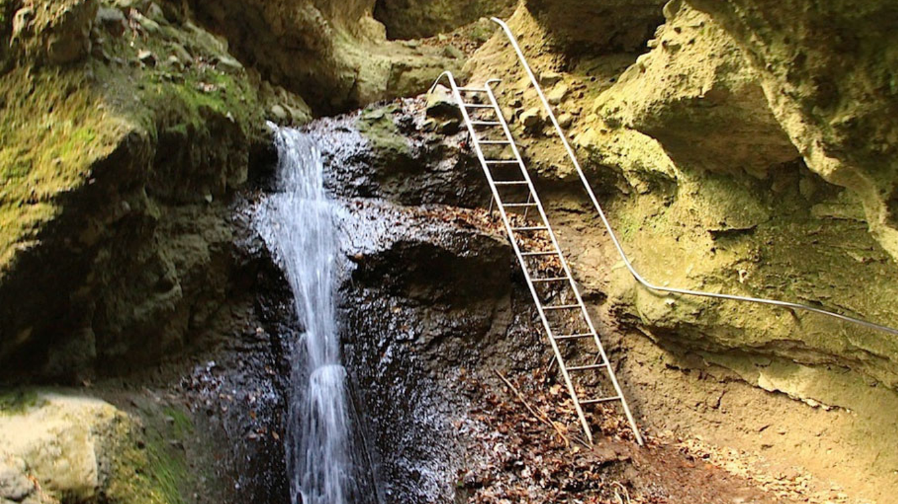
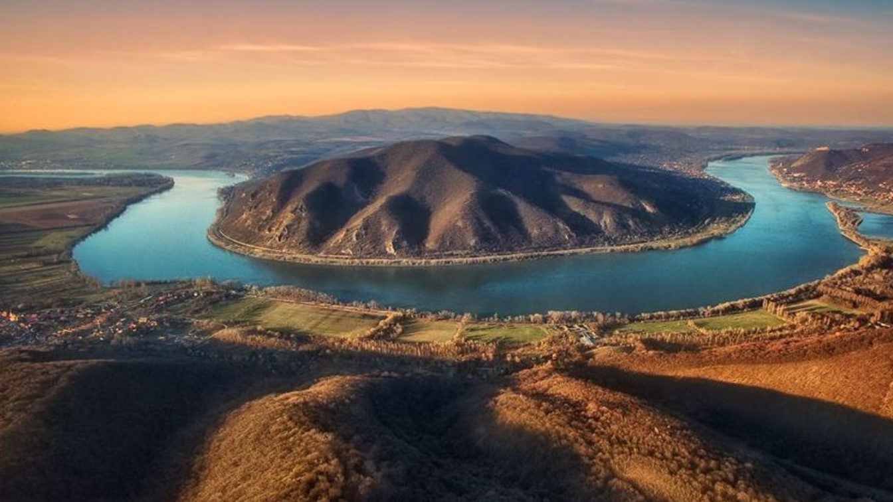

Rám-szakadék
A Rám-szakadék lenyűgöző természeti szépsége miatt méltán tartozik a térség legismertebb kirándulóhelyei közé, amit nem csak a környékről, hanem az egész országból sokan felkeresnek: a látogatók éves száma meghaladja a 60.000 főt. A szakadék maga egy vulkáni eredetű, nagyjából észak-déli irányban futó szurdokvölgy. Összeszűkülő sziklafalai olykor merőlegesek, de vannak befelé dőlő falak is. Mélysége több helyen meghaladja a 35 métert, míg szélessége helyenként a 3 métert sem éri el. A sziklamederben állandóan csörgedezik a víz, amely hóolvadáskor és nagyobb esők idején patakká duzzadhat. A szurdokban összességében 112 méteres szintkülönbséget kell leküzdeniük a túrázóknak. A völgy alsó és felső bejáratánál erdei pihenőhely fogadja az érkezőket. A Rám-szakadék természeti adottságai miatt egyike a legnehezebben járható magyarországi jelzett turistautaknak. A Pilisi Parkerdő Zrt. 2005-ben a szakhatóságokkal egyeztetett fejlesztést hajtott végre, amely során a nehezen járható szakaszokon rozsdamentes anyagból készült létrák és kapaszkodó korlátok, a pihenőhelyeken új asztalok és padok, valamint tájékoztató táblák lettek kihelyezve. Biztonsági okok miatt a Rám-szakadékot Dömös irányából egyirányúsították.A szakadékban a zöld sáv jelzést követve elérjük a Rám-szakadék felső pihenőhelyét. Ide csatlakozik a sárga jelzés, amelyen balra fordulva Dobogókőre, míg jobbra fordulva, az Árpádvárat megkerülve, a Lukács-árokba érkezünk. Ez a jelzés régebben a másik oldalról kerülte az Árpádvárat, azonban kedvezőtlen időjárás esetén csúszásveszélyes volt, ezért 2007-ben át lett helyezve a mostani nyomvonalra. A Lukács-árok szintén nagyon hangulatos, de a Rám-szakadékhoz képest ott már könnyebben haladhatunk. A Lukács-árokból kiérve az erdészeti műútra érkezünk, amelyen visszajuthatunk Dömösre.
Prédikálószéki kilátó
A Pilisi Parkerdő Zrt. a Visegrádi-hegység 639 méter magas csúcsán, a Prédikálószéken adta át és nyitotta meg kilátóját a természetjáró társadalom előtt 2016 őszén. A beton alapon álló, 12 méter magas, 70 m2 bruttó alapterületű fa építmény három, felfelé haladva egyre szélesedő teraszáról fokozatosan nyílik meg az egész Dunakanyar panorámája. Az egyes szinteken a térségben jelentős szerepet játszó magyar királyok emlékét elevenítik fel a kézzel festett, egyedi tájékoztató táblák. Az új kilátó a kor követelményeinek megfelelő szolgáltatásokat is nyújt a látogatóknak: tetején két webkamerát helyeztek el, és környékén ingyenes Wi-Fi kapcsolat is elérhető. A kilátó mellett tűzrakóhely, valamint padok és asztalok is várják az ide látogatókat. Történet: A természetjárók körében nemcsak a fantasztikus panoráma miatt népszerű a Prédikálószék hegycsúcsa, hanem például az elérhető közelségben lévő, szintén rendkívül frekventált kirándulócélpontok, a Rám-szakadék és a Vadálló-kövek miatt is. Évente sok százezren döntenek úgy, hogy erről a csúcsról tekintenek körbe a térségre, vagy pihennek meg és piknikeznek egyet a rendelkezésre álló padokon és asztalokon. A Pilisi Parkerdő Zrt. Koller József Ybl-díjas építész tervei alapján, 2016 tavaszán kezdett a Prédikálószékre megálmodott kilátó építésébe, és a helyszínen rendelkezésre álló közjóléti infrastruktúra további fejlesztésébe. A parkerdőgazdaság a tervezés során különös hangsúlyt fektetett egyrészt a hely korábbi állapotának megőrzésére (a kilátópont természetes képződményét ezért érintetlenül hagyta), másrészt az építés során a terület állat- és növényvilágának védelmére (a madarak költési időszakában és a növények vegetációs idejében, a természetvédelmi törvénnyel összhangban az építkezés szünetelt). A kilátó építése során környezetre veszélyes anyagot nem használtak fel.
Az Egri vár másolata

A várat az Egri csillagok című film forgatásához építették az 1960-as években. Várkonyi Zoltán filmrendező a látványos, több ezer statisztát felvonultató csatajelenetekhez választotta a Pilisborosjenő és Csobánka között húzódó völgyet a film egyik helyszínéül. A forgatások alatt a nagyrészt fából készült vár egy része leégett, de rögtön újjá is építették. A film elkészülte óta magára hagyatva pusztul. A forgatás 40. évfordulójára 2008 nyarán a vár környékét a Pilisborosjenői Önkormányzat rendbe hozatta.Ezt a különös „várat" 1968-ban építették fel Pilisborosjenő határában, mint a híres film díszletét. Igazi kőből épült, hiszen azon színészek másztak fel a forgatás során, amikor lényegében egy valódi csatát vettek fel, s mindezt más anyag nem bírta volna el. Azért itt épült fel a vár, mert a valódit Egerben körbenőtte a város, ezért forgatni ott nehéz lett volna, másrészt ez Budapest, azaz a filmgyár közelében volt. Továbbá szempont volt minden bizonnyal, hogy ezt bátran szét lehetett rombolni. Nem utolsósorban pedig a közeli katonai bázisról jó sok statisztát lehetett verbuválni. Amit nem romboltak le a forgatás során, azt felemésztette az idő, a természet a sziklákon kívül mindent visszahódított mára. 2008-ban, a forgatás 40. évfordulójára a vár környékét a Pilisborosjenői Önkormányzat rendbe hozatta. Persze most se keressünk egy komplett várat, de a megmaradt falak kiváló terepet nyújtanak egy gyerekcsatának (különösen, ha előre készülünk például jelmezekkel!), vagy egy hosszabb pikniknek.